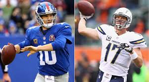

Eli Manning
Eli Manning carrer turned out to a success. The First overall pick in 2004's draft highly lived up to expections as one of the all great Quaterbacks.He won 2 Superbowls agianst Tom Brady who is now consierd the greast of all time. Eli manning has had alot of success for the Giants also. He is top 10 in all-time comebacks,passing yards,and touchdowns. He might not be a first ballot hall of famer but will be a hall of famer one day. He is underrated because of the amount of interceptions he has thrown.

Was Eli manning a big risk
Yes indeed Eli manning was a big risk with him beating Tom Brady's patorits twice in the superbowls. It was Eli or Phillp Rivers but Eli is a leader and a winner besides Phillp Rivers who is maybe more accurate due to him being one of the best QB's at passing yards per game.
